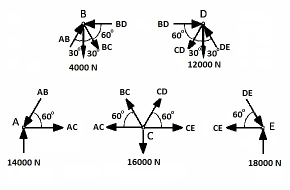
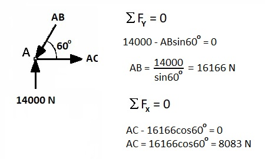
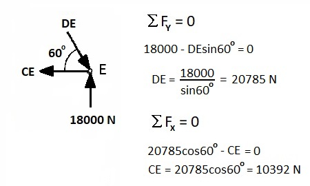
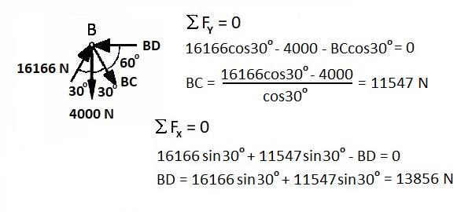
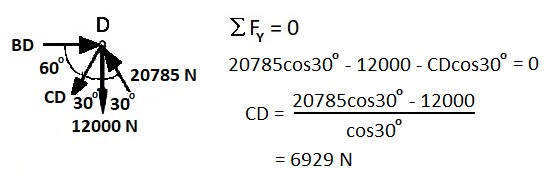

Static Equilibrium of Rigid Bodies (2-D)
SUMMARY: It is practically impossible to directly measure internal forces but the ability to solve static equilibrium problems yields an estimate of these forces. In the example of the gymnast, we found that the muscle force required to hold that position was extremely large and this, in turn, caused very large forces (stress) within the shoulder joint. In industry, this method is used quite often to determine the safety of lifting tasks by estimating the muscle and joint stresses in the lumbar spine.
REVIEW Solving static equilibrium problems always uses the following steps:
1) Draw the Free Body Diagram of the rigid body showing all forces and dimensions.
2) Complete the Force Table by resolving all forces into X, Y components and moments.
3) Use the three equations of static equilibrium to solve for the unknowns.
Simple Trusses and the Method of Joints:

Quite often in engineering, an object is a structure composed of rigid links and it is necessary to know all of the forces on each link. A link is called a "truss" and the forces are determined using the method of joints. In biomechanics, we do not use this method as much as civil engineers designing bridges but a basic understanding is useful for more advanced topics such as bone modeling and finite element modeling that is becoming an important part of biomechanics. Structures behave differently than homogeneous materials and we will see this when we look at bone mechanics. The figure to the right shows a model of the trabeculae in a section of bone. We can see that the structure of bone is a network of connected trusses.
Let us look at a typical engineering problem in which we need to know the compression and tension forces on each truss of the bridge shown below. The bridge is a structure made of seven trusses: AB, AC, BC, BD, CD, CE, and DE.

Step !: Find the external forces RA and RE. We can use the sum of the moments about E to find RA and then the sum of the forces in the Y direction to find RE.

Step 2: Draw free body diagrams of each joint and choose the joint with the lowest number of unknown forces acting on it to start solving the truss forces.

Joints A and E have 2 unknown forces, joints B and D have 3 unknown forces and joint C has four unknown forces. We will start with joint A and use the method of joints to solve for forces AB and AC. Since AC is horizontal, the vertical component of AB must balance the 14000 N force. We use the sum of the forces in the vertical (Y) direction to find AB and then we can use the sum of the forces in the horizontal direction to find force AC.

Similarly we can do the same thing for joint E to solve the forces DE and CE. Since CE is horizontal, the vertical component of DE must balance the 18000 N force. We use the sum of the forces in the vertical (Y) direction to find DE and then we can use the sum of the forces in the horizontal direction to find force CE.

Now that we know force AB = 16166 N, we can examine joint B and determine the forces BC and BD. Since BD is horizontal, We can sum the vertical forces to find force BC, We can then sum the horizontal forces to find force BD.

And now that we know force DE = 20785 N, we can examine joint D and determine the last remaining force CD. We can sum the vertical forces to find force CD.

We have now found the forces in all seven trusses and we don't need to examine joint C. However, it is a good idea to use joint C as a check to see that it is indeed in static equilibrium and that we have not made a mistake.
The forces in the trusses are:
AB = 16170 N compression
AC = 8080 N tension
DE = 20800 N compression
CE = 10390 N tension
BC = 11550 N tension
BD = 13860 N compression
CD = 6930 N tension
If this bridge was made of steel, and we know that steel can withstand larger forces in tension than in compression, we could use this information to choose the size of the trusses needed to withstand the loads. For instance, trusses BC, and CD are in tension, have relatively small loads and could be replaced with thinner cables. Conversely, AB, BD, and DE have large compressive loads and would require strong, thick beams.